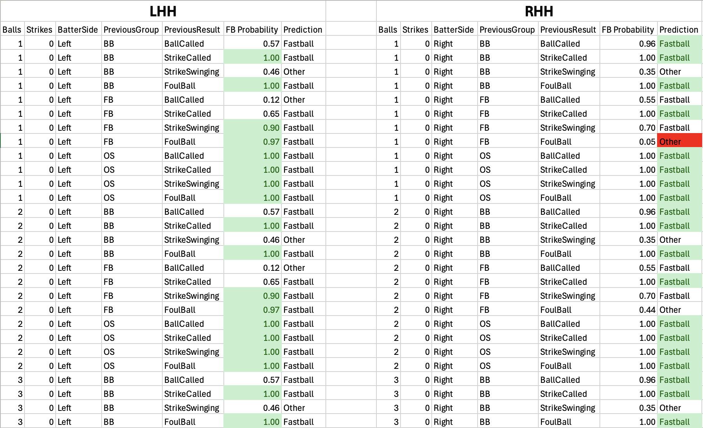

Pitch Predictor Model
Simple PyTorch neural network that uses pitch sequencing patterns to predict whether a pitcher will throw a Fastball or Off-Speed pitch. Features include balls (0-3), strikes (0-2), Batter Side, Previous Pitch Group (Fastball, Breaking Ball, Off-Speed), and Previous Pitch Outcome (Ball, Called Strike, Swinging Strike, Foul). The Nueral Network has two Hidden Layers with ReLU activation functions and a single output layer with a sigmoid activation function. After extracting and cleaning pitcher specific data, the model will predict for every possible situation and generate a "cheat sheet" csv that can be used in game.
